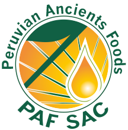

BIENVENIDOS A PERUVIAN ANCIENTS FOODS

Peruvian Ancients Foods SAC, es una empresa agroalimentaria, especialista en la producción, comercialización y desarrollo de súper alimentos innovadores “SUPERFOODS”, provenientes de la biodiversidad peruana, que utiliza procesos y tecnologías que protegen sus compuestos bioactivos y no contaminan el medio ambiente.